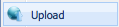
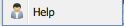

The Data Browser enables users to organize and manage their data files in the Discovery Environment from any tab within the perspective. For example, if a file needs to be uploaded for doing an analysis, the user need not leave the analysis wizard to upload data. The data browser displays all files uploaded by a user in the discovery environment, regardless of perspective chosen.
Three file types are currently supported in the Discovery Environment:
• Nexus-(parser has been validated against Bio Perl dataset, thus any file type found to be represented in that dataset is considered valid)
• Newick
• CSV (comma-separated values) Note: for excel files containing trait data, conversion to CSV format is required.
Icons:
 enables users to hide/reveal the Data Browser.
enables users to hide/reveal the Data Browser. enables users to upload their data, create new folders and access help.
enables users to upload their data, create new folders and access help.The following items are contained as options upon selection of this icon:
 selecting this option brings up a window prompt that allows the user to select a supported file type for upload file from their local hard drive.
 selecting this option brings up a window prompt that allows the user to create and specify the name of the a new folder
selecting this option brings up a window prompt that allows the user to create and specify the name of the a new folder
 selecting this option allows for access to help.
 selecting this icon allows for import of tree data from the Phylota database. For details about this database, please refer to the following website: http://www.phylota.net/.
selecting this icon allows for import of tree data from the Phylota database. For details about this database, please refer to the following website: http://www.phylota.net/.Please note, the trees contained within do not have branch lengths. These will need to be added by the user for use with Contrast.
 Folder icons listed in the Data Browser can be “double-clicked” to reveal files contained within. Folders can also be opened by selecting the small triangle located next to the icon. This triangle only displays when files are contained within the folder. “Right-clicking” the folders will bring up a menu with the following options:
Folder icons listed in the Data Browser can be “double-clicked” to reveal files contained within. Folders can also be opened by selecting the small triangle located next to the icon. This triangle only displays when files are contained within the folder. “Right-clicking” the folders will bring up a menu with the following options:- Upload:selecting this option brings up a window prompt that allows the user to select a supported file type for upload file from their local hard drive
 File icons listed in the Data Browser can be “right-clicked” to reveal a menu with the following options:
File icons listed in the Data Browser can be “right-clicked” to reveal a menu with the following options: